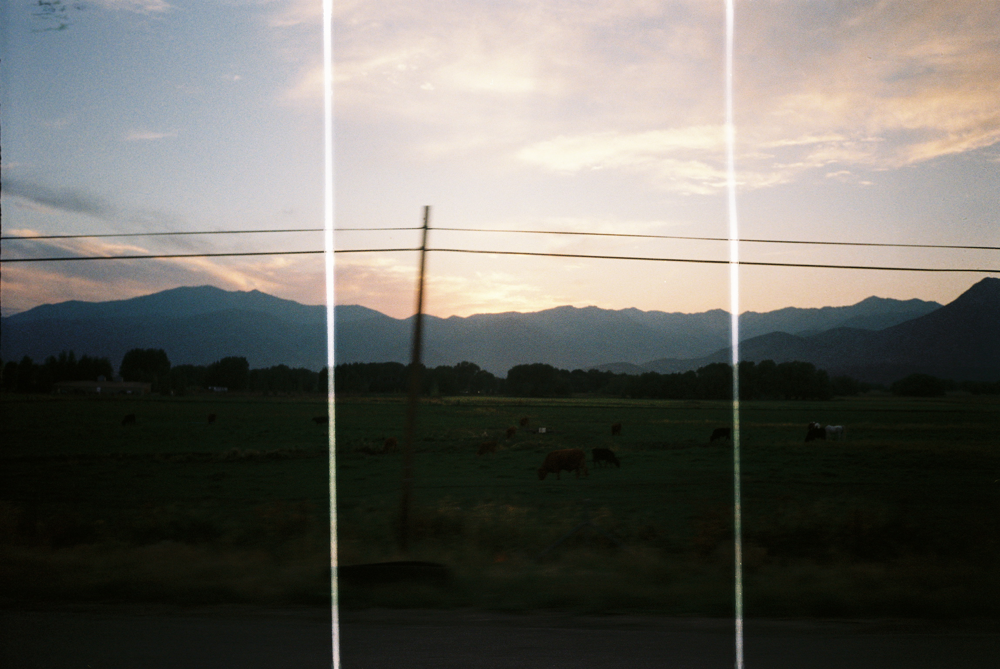
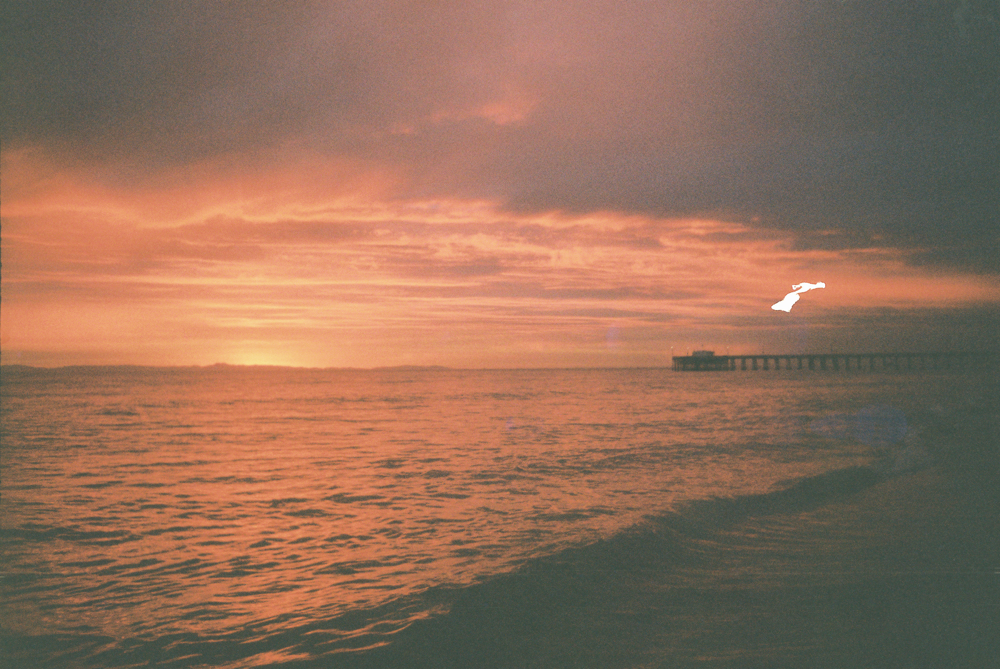
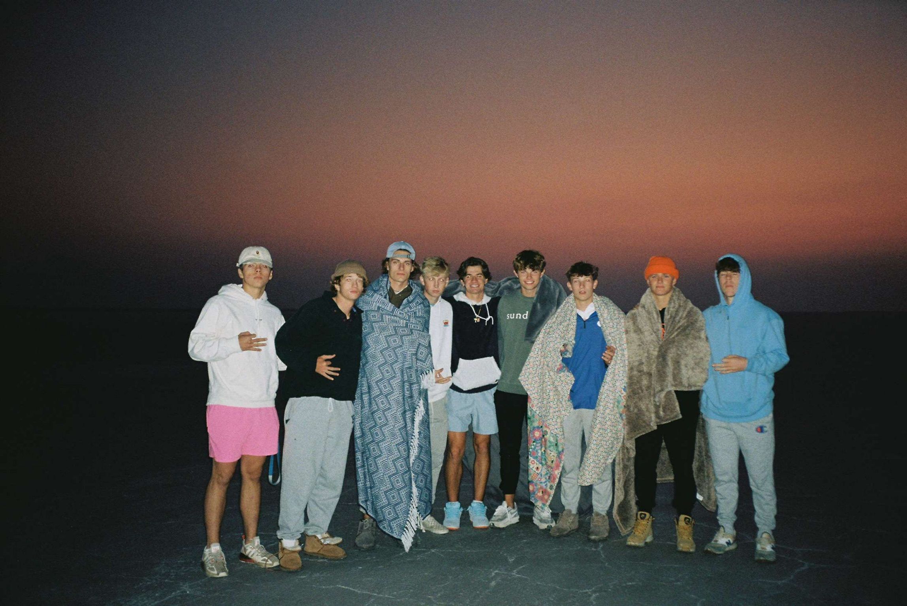
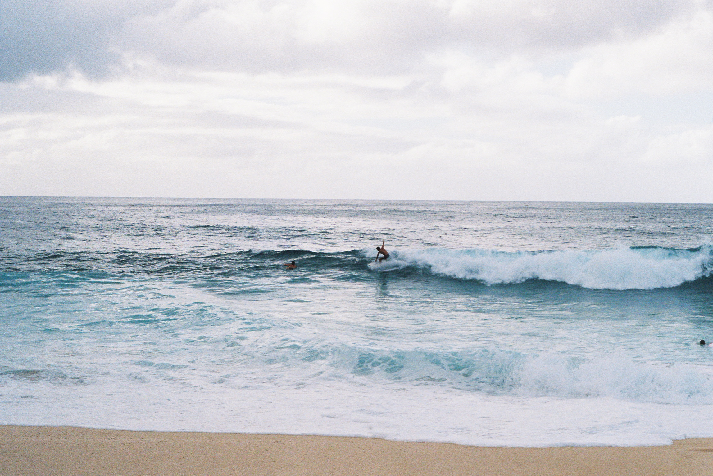
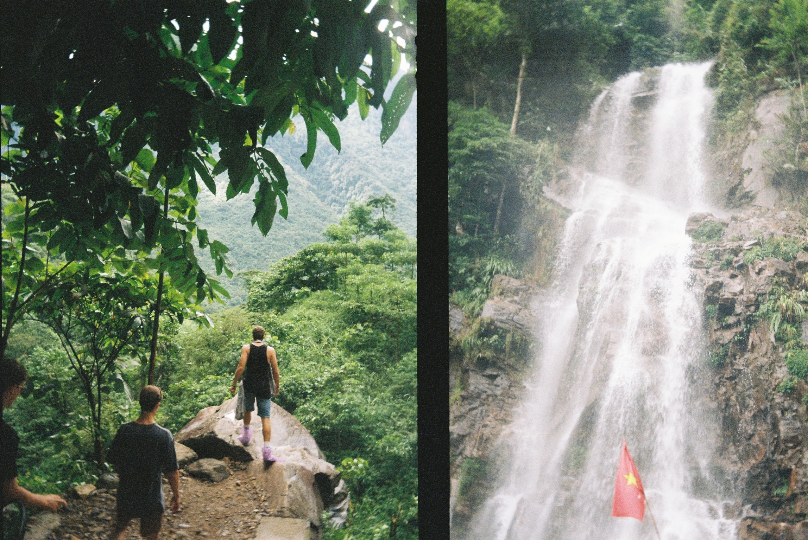
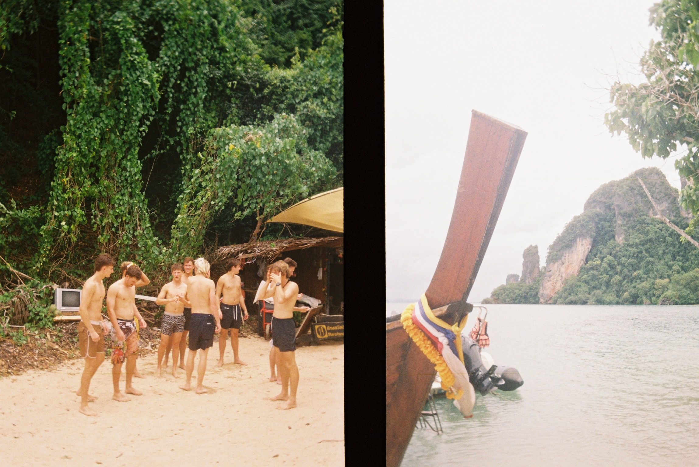

How to Load a Film Camera Tutorial
My Favorite Film Pictures
Highway Shot of a Farm

This is a photo I took from the passenger seat of a car on a road trip to California of a cattle farm. I appreciated the imperfections in the development, as I feel this is what makes a film photo so unique.
Newport Beach

This is a photo I took while on a trip to Newport Beach around sunset. I was incredibly happy with the way the colors turned out and is one of my favorite pictures to this day.
Salt Flats

This was one of the first pictures my friends took when we first met each other our freshman year at BYU at the Salt Flats in Northern Utah
Man Surfing

This was a photo I took of a friend while he was surfing in Hawai'i. He would go on to break the board minutes after the picture was taken.
Vietnam Waterfall Hike

This picture was captured with my new film camera, which is a dual-frame camera by Kodak. It captures two images on just one film slide. These images capture a waterfall hike taken in Northern Vietnam
Phi Phi Islands

With the same camera described above, these photos were taken on the Phi Phi Islands in Thailand. I was violently ill on this day and was not enjoying myself as much as the pictures may imply.
My Favorite Places I Have Shot Film
- Southeast Asia
- My friends and I recently had the opportunity to visit Thailand, Cambodia, and Vietnam. Aside from the enjoyment I got of interacting with a new culture, I witnessed some of the purest, most breathtaking views of my entire life on this trip.
- Europe
- Before leaving on my mission, I had the opportunity to go live abroad in London and spent a month hopping around Europe. I had many opportunities to visit various countries like Italy, France, and Spain, taking dozens of photos in the meantime.
- Southern California
- Annually, my friends will take a trip down to Southern California where we go to the beach and drive along the coast. One of my favorite types of photos are coastal, so I am always sure to caputre these shots whenever I have the chance.
- New York City
- I grew up just outside of New York City, so when I visit home for breaks, I love to bring my camera and take pictures of the packed streets or cool sights in the concrete jungle. There is never a shortage of photo opportunities, or new attractions that have sprung up since my last visit.
- Around Provo
- The majority of my pictures are likely taken in Provo, given I spend the most time here. I enjoy to photgraph parties I attend or the adventures my friends and I go on.
- Plus, it is very easy to move around Provo and find endless things to photograph, whether its the mountains, campus, or a social setting.
Searches for "Film Photography" on Google Over the Years

The above Tableau shows how many people searched the phrase "Film Photography" every month on Google's Search Engine since 2004. After a steady decline up until 2017, there has been a resurgance in popularity in interest for film photography. The y-axis shows "popularity." Peak popularity is shown as 100% (April 2004), and every month is measured in relation to this benchmark.
Back to Top